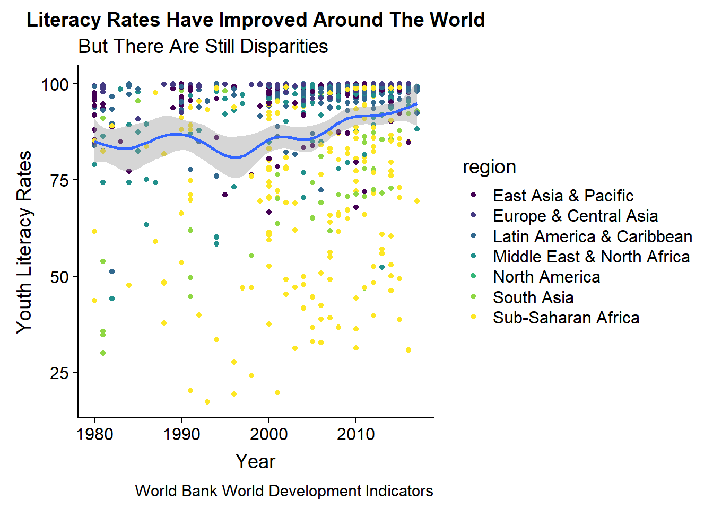

4 Story-Telling
4.1 Presenting Problem
Many Parents Are Concerned About Parenting Well.
4.2 What Do The Data Say?
library(WDI) # World Bank World Development Indicators
mydata <- WDI(country="all",
indicator=c("SE.ADT.1524.LT.ZS"), # Youth Literacy
start = 1980,
end = 2017,
extra = TRUE) mydata %>%
filter(region != "Aggregates") %>%
ggplot(aes(x = year,
y = SE.ADT.1524.LT.ZS)) +
geom_point(aes(color = region)) +
geom_smooth() +
labs(title = "Literacy Rates Have Improved Around The World",
subtitle = "But There Are Still Disparities",
y = "Youth Literacy Rates",
x = "Year",
caption = "World Bank World Development Indicators") +
scale_color_viridis_d()
4.3 Simple Action Steps
- Use your local library to check out books for your children.
- Read to your children a little bit every day.